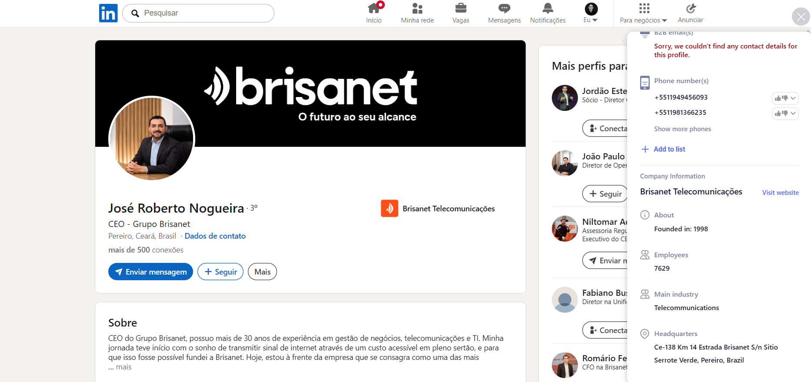
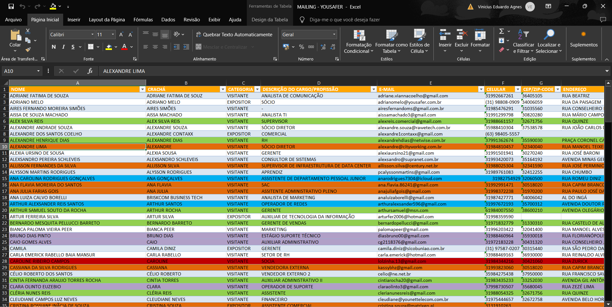
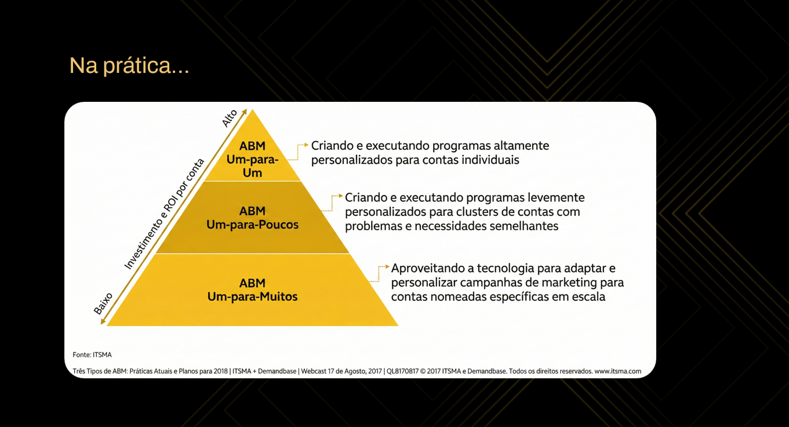

YouSafer ABM Control Center
ABM YouSafer para transformar ISPs em pipeline previsível.
Este painel apresenta a estratégia completa: ICP, lista de contas, progressão por estágio, score, scrap, clusterização por porte da base, persona/cargo, conteúdos por canal, emails por persona, LPs, régua CRM, handoff comercial e roteiro de decisão para o Gabriel.
Tese: velocidade e preço viraram commodity. A YouSafer entra como SVA de saúde útil,
recorrente e percebido para retenção, diferenciação e receita.
Painel de controle
Visão de operação para explicar e executar.
O painel está organizado como centro de comando: cada módulo tem objetivo, sinal, ação e próximo passo. Não existe health score antigo aqui; existe progressão de conta.
Scrap, base e clusterização
Do scrap público à rota ABM da conta.
Este módulo mostra como o scrap e a base de mailing deixam de ser uma planilha solta e viram decisão de rota. A nova regra é: tamanho estimado da base define 1:1, 1:poucos ou 1:muitos; persona/cargo define a narrativa, a LP e a cadência.
Fonte pública / LinkedInScrap de decisor e conta

O perfil público ajuda a validar cargo, empresa, senioridade, stakeholders e sinais de conta.
Mailing / ExcelBase bruta para clusterização

A planilha vira inteligência quando cruza consentimento, cargo, empresa, score e persona.
Nova regra de negócio
Base primeiro. Persona depois. Intenção no timing.
O porte da base é o melhor proxy de potencial econômico para YouSafer. Ele define o nível de esforço ABM. A persona define o argumento de convencimento. O score/intenção define quando passar para vendas.
Tabelas de clusterização por cargo/persona
CEO / DonoClique em uma linha para simular a regra de negócio daquele lead e visualizar o funil ABM correspondente.
Classificador ABM
1:1

Drawflow da estratégia
Da lista ao pipeline, sem elementos cortados.
Fluxo redesenhado em lanes responsivas. No desktop ele abre como board horizontal dentro do painel; no mobile vira sequência empilhada. Cada card representa uma etapa real do ABM YouSafer.
Caminho principal
Realimentação / reengajamento
Pronto para vendas
Score ABM
Sistema de pontuação preservado.
Fit 40 + Intent 40 + Progression 20. As regras foram mantidas sem alteração para preservar a lógica aprovada.
Email por persona
A cadência muda pela forma de convencimento.
Selecione a persona para ver promessa, objeção principal, sequência de disparos, CTA e critério de passagem para SDR. Esta é a área principal para ajustar no futuro.
Sequência de disparo
CEO / DonoLPs por persona
Cada persona entra por uma dor e um ativo diferente.
As páginas usam a mesma tese, mas mudam gancho, promessa, CTA, campos e argumento de qualificação.
Régua CRM e automações
Do primeiro sinal ao handoff comercial.
Todo clique, resposta ou visita precisa virar campo, tag, score, tarefa, SLA e próximo passo. A régua abaixo está preparada para Make/n8n + CRM + Apollo.
Conteúdo, blog e ativos
Biblioteca para alimentar todos os canais.
Os temas abaixo podem virar blog, email, carrossel, reels, webinar, argumento comercial e LP. Essa estrutura facilita adicionar novos conteúdos sem refazer o painel.
Biblioteca de plays
Plays por estágio de progressão.
Inventário operacional do plano para priorizar execução, responsáveis e próximos módulos.
Roadmap
6 semanas para tirar do desenho e colocar em piloto.
Decisão para o Gabriel
Decisão executiva: transformar a estratégia em piloto ABM de 30 dias.
Gabriel, o objetivo aqui é aprovar uma máquina de progressão de contas, não uma campanha isolada. A estrutura conecta fonte pública, clusterização por cargo, conteúdo, LP, score, cadência e handoff para que vendas receba contexto — não apenas leads.
Mensagem final
Com sinal verde, o próximo passo é piloto ABM de 30 dias.
Foco em contas Tier 1/2, diagnóstico, simulação e geração de pipeline com contexto.
Principais canais de captação
Matriz de canais, clusters por base e posts por canal.
A aba agora separa função do canal, cluster de base e grade semanal. Clique em cada canal para ver os posts, CTAs, persona, cluster e papel no funil.
Matriz por canal
funil · papel · CTACluster por usuários ativos
ângulo principal · melhor canal